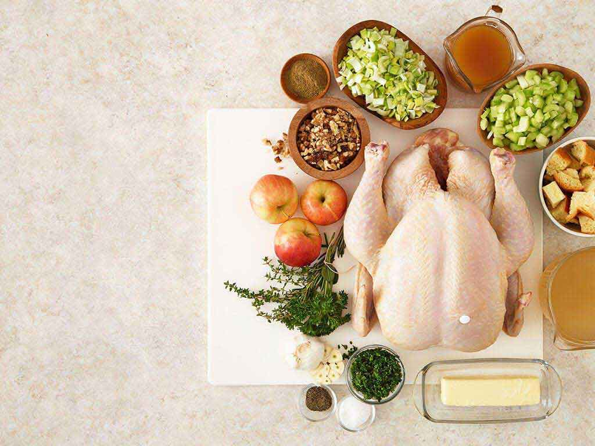
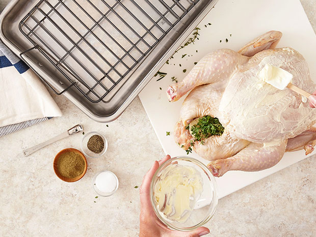
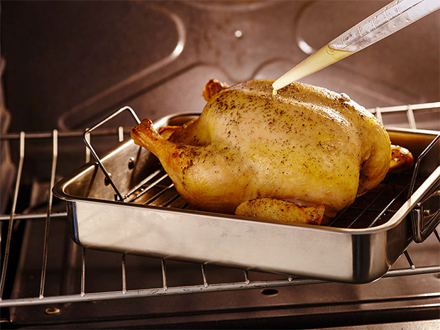
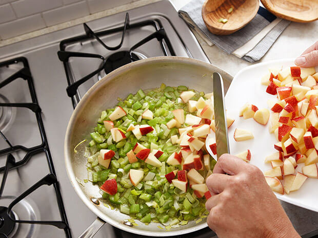
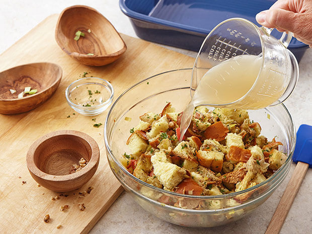
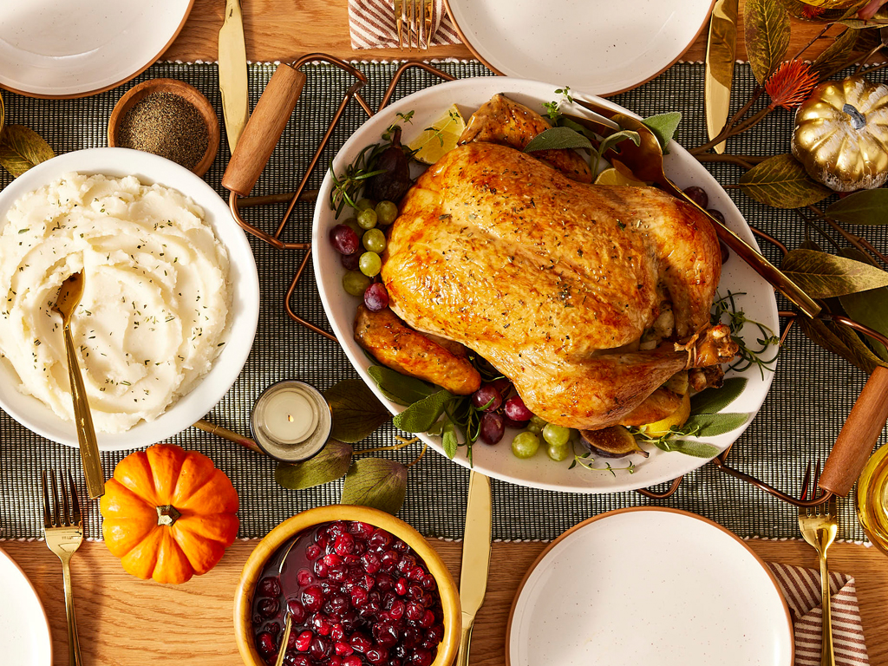

20 Layer Air Fryer Nachos
These layered air fryer nachos are fully loaded for the party with
seasoned ground sirloin, tortilla chips, chiles, cheese, sour cream,
alapenos, and tomatoes.
Prep Time:10 mins
Cook Time:15 mins
Total Time:25 mins
Servings:12
Ingredients
- 2 lbs. ground sirloin
- 1 cup finely chopped onion, divided
- 1 package taco seasoning
- 1/2 cup water
- 1 1/2 bags (about 20 ounces) tortilla chips, divided
- 16 ounces shredded Cheddar cheese, divided
- 2 (4-ounces) cans diced green chiles
- 1 (15-ounce) can black beans, drained and rinsed, divided
- 1 cup salsa
- 1/2 cup sliced pickled jalapenos, plus more for garnish if desired
- 1 (2.25-ounce) sliced black olives, drained
- 8 ounces sour cream
- 1 avocado, peeled and diced
- 2 Roma tomatoes, seeded and diced
- 1/2 cup cilantro
Directions
Step1
Heat a large skillet over medium-high heat and add ground beef
and onion. Cook, while crumbling with a spoon and stirring often
until browned. Add taco seasoning and water and cook until slightly
thickened, about 3 minutes. Remove from heat.
Step2
Line the bottom of a deep air fryer basket with parchment paper and allow
the parchment to come up the sides. Arrange a layer of chips along the
bottom. Top with half of the beef mixture and sprinkle 1/3 of the cheese
on top. Spoon green chiles over cheese and top with a second layer of chips.
Sprinkle half of the beans evenly over the chips and top with salsa and the
second third of the cheese. Arrange the last layer of chips over the cheese
and top with remaining beans. Add sliced jalapenos, remaining
cheese and olives.
Step3
Set air fryer to 350 degrees F (175 degrees C) and cook until the
cheese is melted and begins to brown, 6 to 8 minutes.
Step4
Using the parchment paper, carefully lift the nachos from the air fryer
basket onto a serving platter. Top with sour cream, avocado, tomato,
cilantro, and any additional toppings if desired. Serve immediately.
Holiday Roast Chicken With Stuffing

Prep Time: 15 min
Cook Time: 3hr 0 min
Serves: 10-12
Ingredients
- 1 PERDUE® Fresh Whole Chicken with Giblets
- 1 1/2 sticks butter
- 1 tbsp.poultry seasoning
- 2 tsp. salt
- 1 tsp. black pepper
- 6 sprigs fresh herbs, such as thyme, parsley, rosemary, and sage
- 1 head garlic, halved
- 2-3 cupschicken stock
- 2 cups chopped leeks
- 2 cups celery, diced
- 3 apples, such as Fuji, Gala or McIntosh, diced
into ½ -inch chunks
- 1 cup apple cider
- 12 cups day-old challah, brioche or other egg bread diced
nto 1-inch cubes
- 1 cup roughly chopped toasted walnuts
- 1/4 cup parsley, chopped
Season
Step 1
Preheat the oven to 425°F. Season the inside of the
chicken cavity with 1/2 teaspoon salt and 1/4 teaspoon
black pepper. Stuff the cavity with the fresh herbs and
the garlic. Rub the outside of the chicken with 4 tablespoons
of the butter and sprinkle with 1/4 teaspoon poultry seasoning,
1/2 teaspoon salt and 1/4 teaspoon black pepper. Tuck the wing
tips under the body of the chicken to keep from burning.
Place the chicken on a rack in a roasting pan. Add 1/3 cup
chicken stock to the pan.

Roast
Step2
Roast for 15 minutes at 425°F, then reduce the heat to 350°F.
Continue roasting the chicken, basting every 20 minutes, until
the juices run clear, the legs move easily when wiggled and a
meat thermometer inserted into the thickest part of thigh
registers 170°F. This will take about 2 1/2 to 3 hours for a
5-to-7-pound PERDUE® OVEN STUFFER® Whole Chicken.

Sauté
Step3
Melt 1 stick of butter in a large skillet over medium heat.
Add the leeks and celery and sauté for 2 to 3 minutes. Add
the apples and the apple cider and simmer for 3 to 4 minutes
until the apples start to soften. Stir in the remaining poultry
seasoning and remove from heat.

Bake
Step4
n a large bowl, combine the challah cubes, the sautéed apple
mixture, the toasted walnuts and the parsley. Add enough
chicken stock to make a very moist mixture. Mix well to
combine. Transfer the mixture to a 9” x 11” baking dish.
Bake in a 350°F oven for the last 45 minutes of chicken
roasting time. Remove the chicken and stuffing from the oven.
Let the chicken rest for 10 to 15 minutes before carving.
While the chicken rests, set the table and finish your side
dishes. Carve your chicken, serve with stuffing and enjoy
your holiday!

TIP: For a fun presentation, make individual stuffing cups.
Stuff jumbo muffin liners with stuffing and bake for 45
minutes. If you don’t have stale bread, spread out the bread
cubes on a baking sheet and dry in a 300°F oven for 15 to
20 minutes.

01 of 08 Monday: Creamy Garlic Chicken

"Calling all garlic lovers! This creamy garlic chicken is an easy,
fragrant skillet dish that is great with mashed potatoes or mashed
cauliflower. Since it cooks in one pan, cleanup is easy,
too." —Brenda Venable
Prep Time:15 mins
Cook Time:25 mins
Total Time:40 mins
Servings:4
Ingredients
- 1 teaspoon Italian herb seasoning, or seasoning blend of choice
- 1/2 teaspoon salt, or to taste
- 1/4 teaspoon freshly ground black pepper, or to taste
- 1/4 teaspoon granulated garlic
- 1/4 cup all-purpose flour
- 2 pounds skinless, boneless chicken thighs
- 2 tablespoons unsalted butter
- > tablespoons olive oil
- 8 garlic cloves, or more as needed, peeled and smashed,
about 1/4 cup lightly packed
- 1 cup heavy cream
- 1 cup chicken broth
- 1 tablespoon chopped fresh parsley, or as needed (optional)
Directions
Step1
Combine herb seasoning, salt, pepper, granulated garlic, and
flour in a 1-gallon resealable plastic bag and mix well.
Step2
Combine butter and olive oil in a large, nonstick skillet over
medium heat. Pat chicken thighs dry with paper towels, place in
the bag of seasoned flour, seal, and toss chicken thighs in the flour
mixture until evenly coated.
Step3
When butter stops sizzling, add chicken pieces and cook until
nicely browned, no longer pink at the center and juices run clear,
4 to 5 minutes per side. An instant-read thermometer inserted near
the center should read 165 degrees F (74 degrees C). Remove to a
plate and keep warm.
Step4
Add smashed garlic to the same skillet. Reduce heat to medium-low
and cook garlic, stirring frequently, just until fragrant, no
longer than 1 minute.
Step6
Sample garlic cream sauce and adjust seasoning, if necessary.
Return chicken to the skillet and stir in any accumulated juices.
Allow chicken to heat through. Garnish with fresh parsley and serve.